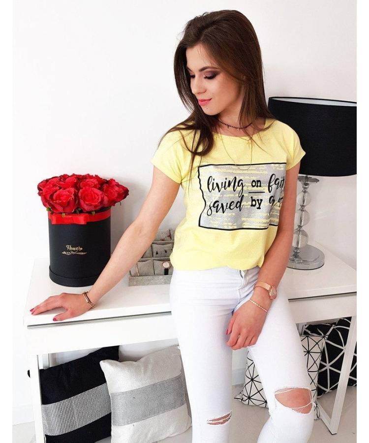

Marškinėliai su užrašais ir nuotraukomis. Susikurkite savo marškinėlius patys ⋆ Marskineliai.lt
 Pereiti prie turinioTel.: +370 618 49929
El. p.: info@marskineliai.lt
KrepšelisKrepšelis
Krepšelyje nėra produktų.
PrisijungtiKontaktai
Susikurk pats Marškinėliai Polo marškinėliai Džemperiai Vaikiški Marškinėliai ilgomis rankovėmis Sportiniai marškinėliai Apatiniai drabužiai Bodžiukai Prijuostės Krepšiai Kepuraitės Mūsų dizainai Naujausi Populiariausi Boso dienai Tėčiui Hobiai Gimtadienis Mamai Įvairūs Augintiniai Bernvakariui Kalėdos Krepšinio fanams Lietuva Meilė Mergvakariui Nusispalvink pats Poroms Šeimai Vaikams Parduok savo dizainą Verslo klientams Apie Apie mus Marškinėlių gamybaSUSIKURK ORIGINALŲ DŽEMPERĮ PATS
RINKTIS DŽEMPERIUSORIGINALŪS MARŠKINĖLIAI IR DŽEMPERIAI ĮVAIRIOMS PROGOMS
ORIGINALŪS MARŠKINĖLIAI IR DŽEMPERIAI ĮVAIRIOMS PROGOMS
POROMS TĖČIUI KALĖDOS VISOS KATEGORIJOSPOPULIARIAUSI MARŠKINĖLIAI
Jeigu norite peržiūrėti mėgiamiausius ir labiausiai įvertintus darbus, juos rasite čia.Visi perkamiausi produktai vienoje vietoje.
190 gr. kokybė Pridėti į norimus Pridėta! Žiūrėti norus Produktas jau pridėtas į norus Žiūrėti norus Keisk esamąVyriški marškinėliai „Tėtis nuostabiausias senelis“
15.00 EUR 190 gr. kokybė Pridėti į norimus Pridėta! Žiūrėti norus Produktas jau pridėtas į norus Žiūrėti norus Keisk esamąVyriški marškinėliai „Prabėgo metai“
15.00 EUR 190 gr. kokybė Pridėti į norimus Pridėta! Žiūrėti norus Produktas jau pridėtas į norus Žiūrėti norus Keisk esamąVyriški marškinėliai „Šis tėtis priklauso“
15.00 EUR 190 gr. kokybė Pridėti į norimus Pridėta! Žiūrėti norus Produktas jau pridėtas į norus Žiūrėti norus Keisk esamąUniversalūs marškinėliai „Jei tėtis negali sutvarkyti“
15.00 EUR 190 gr. kokybė Pridėti į norimus Pridėta! Žiūrėti norus Produktas jau pridėtas į norus Žiūrėti norus Keisk esamąVyriški marškinėliai „Tėtį gera turėti“
15.00 EUR Gamyba 5-7 d.d. Pridėti į norimus Pridėta! Žiūrėti norus Produktas jau pridėtas į norus Žiūrėti norus Keisk esamąVaikiški marškinėliai „Vytis“
13.30 EUR 190 gr. kokybė Pridėti į norimus Pridėta! Žiūrėti norus Produktas jau pridėtas į norus Žiūrėti norus Keisk esamąVyriški marškinėliai „Šis tėtis geriausias“
15.00 EUR 190 gr. kokybė Pridėti į norimus Pridėta! Žiūrėti norus Produktas jau pridėtas į norus Žiūrėti norus Keisk esamąVyriški marškinėliai „Kings are born“
15.00 EUR 190 gr. kokybė Pridėti į norimus Pridėta! Žiūrėti norus Produktas jau pridėtas į norus Žiūrėti norus Keisk esamąVyriški marškinėliai „Vytis“
15.00 EUR 190 gr. kokybė Pridėti į norimus Pridėta! Žiūrėti norus Produktas jau pridėtas į norus Žiūrėti norus Keisk esamąVyriški marškinėliai „Mylimiausias tėvelis“
15.00 EUR 190 gr. kokybė Pridėti į norimus Pridėta! Žiūrėti norus Produktas jau pridėtas į norus Žiūrėti norus Keisk esamąVyriški marškinėliai „Aš turiu dukrą“
15.00 EUR 190 gr. kokybė Pridėti į norimus Pridėta! Žiūrėti norus Produktas jau pridėtas į norus Žiūrėti norus Keisk esamąVyriški marškinėliai „Tėtis iš didžiosios raidės“
15.00 EUR RODYTI VISUSNAUJAUSI MARŠKINĖLIAI
Čia rasite visus naujausius mūsų produktus.
Išsirinkite vienetinį produktą.
Vyriškas džemperis „Su draugu“
34.50 EUR 31.05 EUR AKCIJA! Pridėti į norimus Pridėta! Žiūrėti norus Produktas jau pridėtas į norus Žiūrėti norus Keisk esamąMoteriškas džemperis „Buldogas“
34.50 EUR 31.05 EUR AKCIJA! Pridėti į norimus Pridėta! Žiūrėti norus Produktas jau pridėtas į norus Žiūrėti norus Keisk esamąMoteriškas džemperis „Cat mom“
34.50 EUR 31.05 EUR AKCIJA! Pridėti į norimus Pridėta! Žiūrėti norus Produktas jau pridėtas į norus Žiūrėti norus Keisk esamąUniversalus džemperis „Šuniukas“
26.00 EUR 23.40 EUR AKCIJA! Pridėti į norimus Pridėta! Žiūrėti norus Produktas jau pridėtas į norus Žiūrėti norus Keisk esamąUniversalus džemperis „Cat dad“
26.00 EUR 23.40 EUR AKCIJA! Pridėti į norimus Pridėta! Žiūrėti norus Produktas jau pridėtas į norus Žiūrėti norus Keisk esamąUniversalus džemperis „Nobody is perfect“
26.00 EUR 23.40 EUR AKCIJA! Pridėti į norimus Pridėta! Žiūrėti norus Produktas jau pridėtas į norus Žiūrėti norus Keisk esamąUniversalus džemperis „Niekas nėra tobulas“
26.00 EUR 23.40 EUR AKCIJA! Pridėti į norimus Pridėta! Žiūrėti norus Produktas jau pridėtas į norus Žiūrėti norus Keisk esamąUniversalus džemperis „Queens are born“
34.50 EUR 31.05 EUR RODYTI VISUSGREITAS PAGAMINIMAS
PRISTATYMAS VISAME PASAULYJE
STILINGA PAKUOTĖ
1000+ UNIKALIŲ DIZAINŲ
NUORODOS
PIRKTI INTERNETU
Pristatymas
Grąžinimas
Taisyklės
Privatumo politika
PARDUOK DIZAINĄ
Dizainerių parduotuvės
Dizainerių produktai
Dizainerių nuostatos
REGISTRUOKIS
APIE MUS
D.U.K.
Atsiliepimai
Naujausi dizainai
Pasiūlymai įmonėms
KLIENTŲ APTARNAVIMAS
Tel.: 8 618 49929
info@marskineliai.lt
© 2020 MARSKINELIAI.LT / MANODOVANOS.LT DABAR TAI VIENA ŠEIMA: Prisijungti Susikurk pats Mūsų dizainai Parduok dizainą Dizainerių parduotuvės DUK Atsiliepimai Kontaktai Apie Apie mus Marškinėlių gamyba Verslo klientams Svetainės naudojimo taisyklės